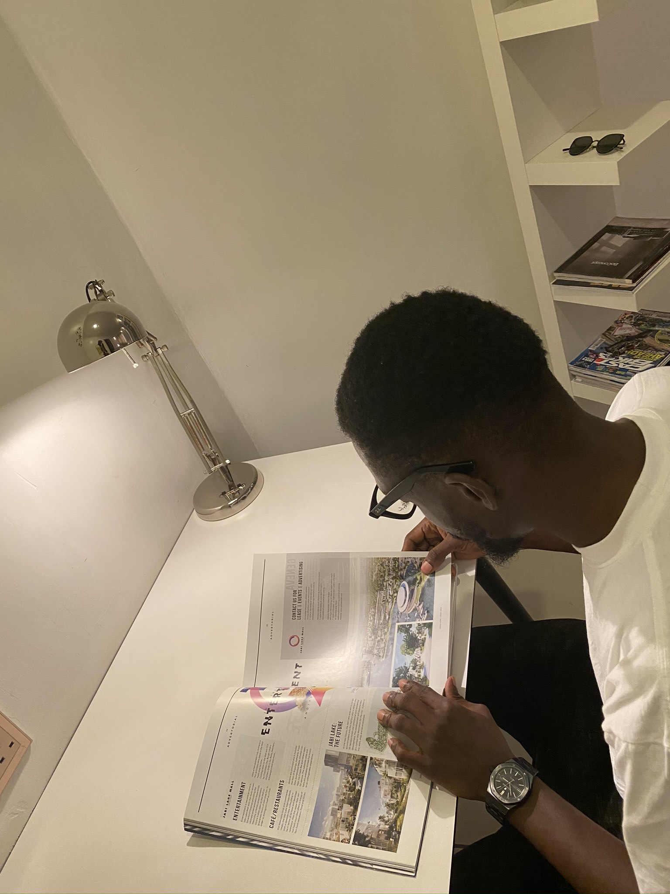

Hello, I am Kayode
A front end developer
A front end developer
To succeed in an environment of growth and excellence and earn a job which provides me job satisfaction and self development and help me achieve personal as well as organizational goals. My key strengths include:
Date of Birth: 25th of August, 1991.
Gender: Male.
Nationality: Nigerian
State of Origin: Ondo State.
LGA Origin: Akoko-Northwest.
2018 – 2019: NATIONAL YOUTH SERVICE CORPS, Eti- Osa LGA, Lagos State,Nigeria, Corps member for community development service group.
2011 – 2015: BACHELOR OF SCIENCE IN EDUCATION, Mathematics, University of Benin, Benin City, Edo State.
2002 – 2008: WASSCE, Ilupeju Grammar School, Ilupeju, Lagos state.
1997 – 2002: First School Leaving Certificate, St’ Paul’s African church school,Ilupeju,Lagos State.
CERTIFICATION AND PROFESSIONAL COURSES
2018 Google Digital Garage {Introduction to digital marketing} (Google Nigeria)
2019 Associate google cloud engineer (In view) (Andela Learning Community)
National youth service corp (Stone Ice Nigeria Ltd) (OCTOBER 2018 -JUNE 2019)
OSADENIS HIGH SCHOOL (MARCH 2012 - MARCH 2015)
Walnik Enterprises (may 2015 – september 2017)
Cpt. Ajayi Kayode
Chevron Nigeria plc
+2438036373895
Mr Debola Oyeniyi
Legal practitioner
+2348035995373